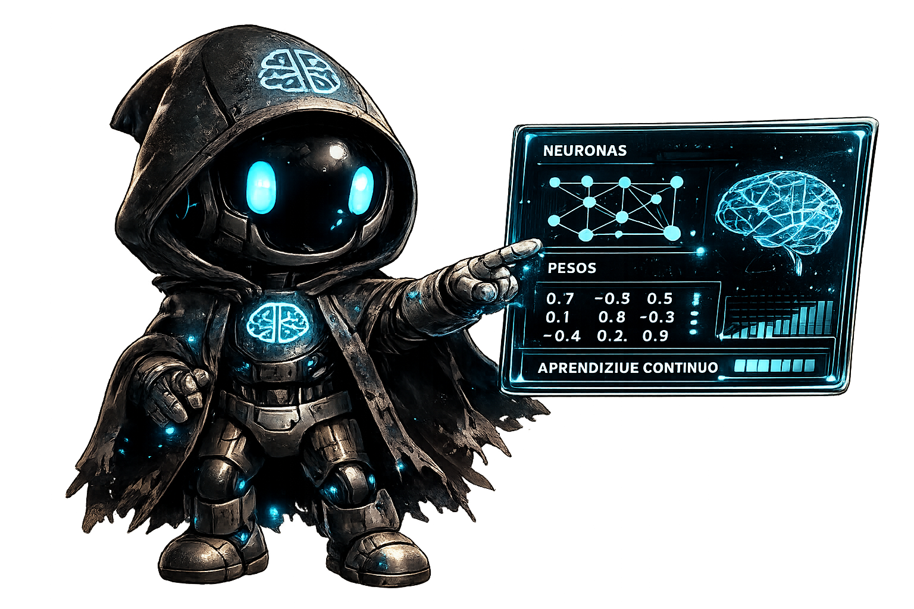
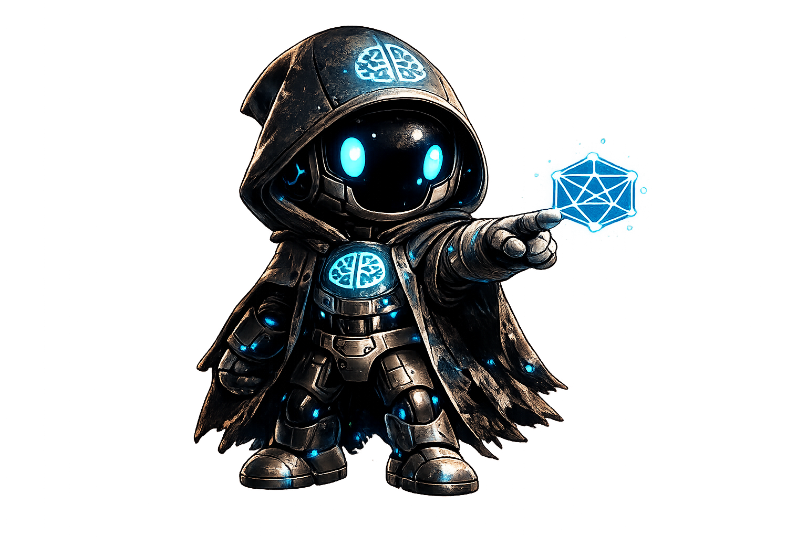

Aprende IA con una experiencia visual, práctica y moderna.
Domina los fundamentos, arquitecturas y aplicaciones reales de la IA. Un programa estructurado, sin promesas vacías, enfocado en crear valor real con tecnología de vanguardia.
Lo que aprenderás :
Fundamentos de la IA

Es crucial entender las bases de la IA, la diferencia entre el Machine Learning y el Deep Learning para entender cómo las máquinas reconocen patrones y mejoran con los datos.
Prompt Engineering
¿La habilidad práctica más demandada? Con ella los usuarios pueden comunicarse eficazmente con modelos de lenguaje, estructurando instrucciones claras para obtener resultados precisos y útiles.
Ética y uso responsable

La privacidad de los datos, la identificación de sesgos en los algoritmos y la importancia de validar críticamente toda la información generada por la IA ayuda a evitar errores o el uso indebido.